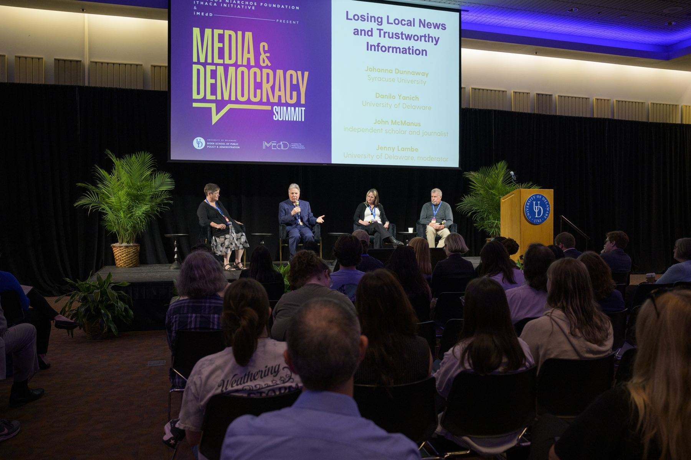
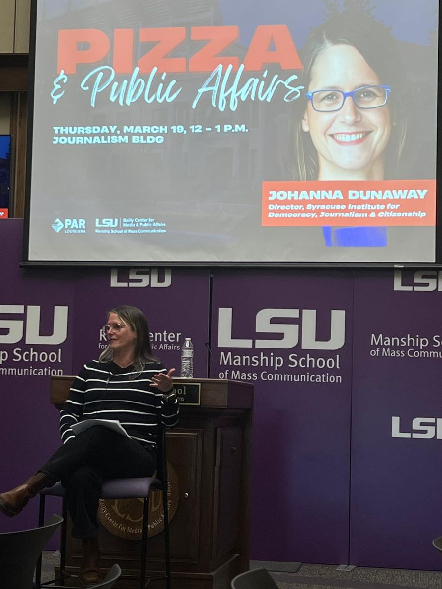

Media
In the news
I talk with reporters about local news, partisan media, polarization, and how people get political information.

Interviews and Quotations
- Sept. 2026USA Today, “Trump wants FCC to go after this TV host. What happens now.” Quoted.
- June 2026The Contrarian, “The Crucial Point Missing From Primary Coverage.” Quoted.
- May 2026Iowa Public Radio, Talk of Iowa, “Media echo chambers create competing realities.” Guest.
- Mar. 2026Spirit & Sword, “The politicization of the news media.” Quoted.
- Feb. 2026Bloomberg Opinion (David M. Drucker), “All these new independents are making politics more partisan,” syndicated in the Miami Herald. Quoted.
- Dec. 2024ABC News Australia, “Rupert Murdoch had a succession plan for his media empire. What happens now a court’s rejected it?” Quoted.
- Dec. 2024Wall Street Journal, “MSNBC and CNN Fight to Dig Out of a Postelection Ratings Hole.” Quoted.
- Aug. 2024Bloomberg News (via BNN Bloomberg), “While ‘Pod Save America’ Tries to Unite Democrats, Its Staff Rebels.” Quoted.
- June 2024The Hill, “Ramaswamy’s new fight is with BuzzFeed.” Quoted.
- Dec. 2023PBS NewsHour, “America at a Crossroads with Judy Woodruff.” Interviewed on local news decline and civic health.
- Aug. 2023PBS NewsHour, “How the Loss of Local Newspapers Fueled Political Divisions in the U.S.” Interviewed.
- Sept. 2016KPCC/LAist AirTalk (NPR affiliate), “Mobile news consumers likely to be less informed.” Guest.
Coverage of Research
- 2026Northwestern Medill Local News Initiative. Research on local news and polarization cited.
- Oct. 2025CBS News Sunday Morning, “Charles M. Blow on the crisis facing local newspapers.” Cites Darr, Hitt, and Dunaway (2018).
- 2018–2021Research on newspaper closures, nationalized news, and polarization (Darr, Hitt, and Dunaway) covered by The New York Times/Associated Press, Axios, Seattle Times, San Francisco Chronicle, Scientific American, Nieman Lab, Journalist’s Resource, Bloomberg Opinion, GBH, American Press Institute, Washingtonian, Texas Standard, and others.
- 2016–2020Research on mobile news attention covered by Nieman Lab, Inverse, PsyPost, Journalism Research News, Free Press Journal, Irish Independent, Editor & Publisher, and the NewsLab.
Writing for general audiences
- Dunaway, J.L. and Soroka, S.N. (2019). “Smartphone-size screens make it harder to pay attention to and understand news stories.” LSE Impact Blog, August 23, 2019.
- Darr, J.P., Hitt, M.P., and Dunaway, J.L. (2019). “Survey shows Desert Sun readers approve of local-news-only editorial page in July.” Desert Sun, August 16, 2019.
- Hitt, M.P., Darr, J.P., and Dunaway, J.L. (2019). “Why Losing Our Newspapers Is Breaking Our Politics.” Scientific American, March 26, 2019.
- Darr, J.P., Hitt, M.P., and Dunaway, J.L. (2019). “When newspapers close, voters become more partisan.” The Conversation, February 11, 2019.
- Dunaway, J.L. (2018). “Doris A. Graber’s Contributions to Political Communication.” Political Communication 35(3): 506–507.
- Dunaway, J.L. (2016). “Mobile vs. Computer: Implications for News Audiences and Outlets.” Discussion Paper D-103. Cambridge: Shorenstein Center, August 2016.
- Dunaway, J.L. (2015). “Why Hillary Clinton is Smart to Play Up her Gender.” Observer, July 2015.
Recent invited talks
- June 2026Keynote, “Citizen Perceptions, Public Opinion, and Democratic Discontent,” Conference on the Crisis of Democracy and the Future of Democratic Governance, Basque Country Democracy Week, Bilbao, Spain.
- May 2026“Local Newspapers and Down-Ballot Political Competition,” Political Behavior Workshop, CEVIPOF, Sciences Po, Paris.
- May 2026John Breaux Symposium, “America at 250,” Reilly Center, LSU Manship School of Mass Communication, Baton Rouge.
- May 2026“Local News and Political Competition,” Conference on American Political Institutions in a Changing Media Environment, Hoover Institution, Stanford University.
- Mar. 2026Pizza & Public Affairs series, Reilly Center for Media & Public Affairs and PAR Louisiana, Manship School of Mass Communication, Louisiana State University, Baton Rouge.
- June 2025“Media and Democracy,” Institute for Humane Studies Symposium on the Future of Liberalism, Arlington, VA.
- May 2025“Losing Local News and Trustworthy Information,” SNF Ithaca x iMEdD Media & Democracy Summit, University of Delaware.
- Oct. 2024“News Access and Political Accountability,” Democracy Speaker Series, University of New Mexico.
- Oct. 2024“News Access and Political Accountability,” Local News and the Future of Democracy, Center for Communication and Civic Renewal, University of Wisconsin–Madison.
- Sept. 2024“Nationalized News Increases Polarization and Weakens Democratic Norms,” Andrew Carnegie Fellows Convening, Carnegie Corporation of New York.
- May 2024“Causes and Consequences of Declining Local News,” American Politics Workshop, University of Maryland.
- Apr. 2024“Changing News Environments: Effects on Engagement and Democratic Health,” International Meeting of the Political Communication Research Group (GRCP), Université de Sherbrooke, Longueuil, QC.
